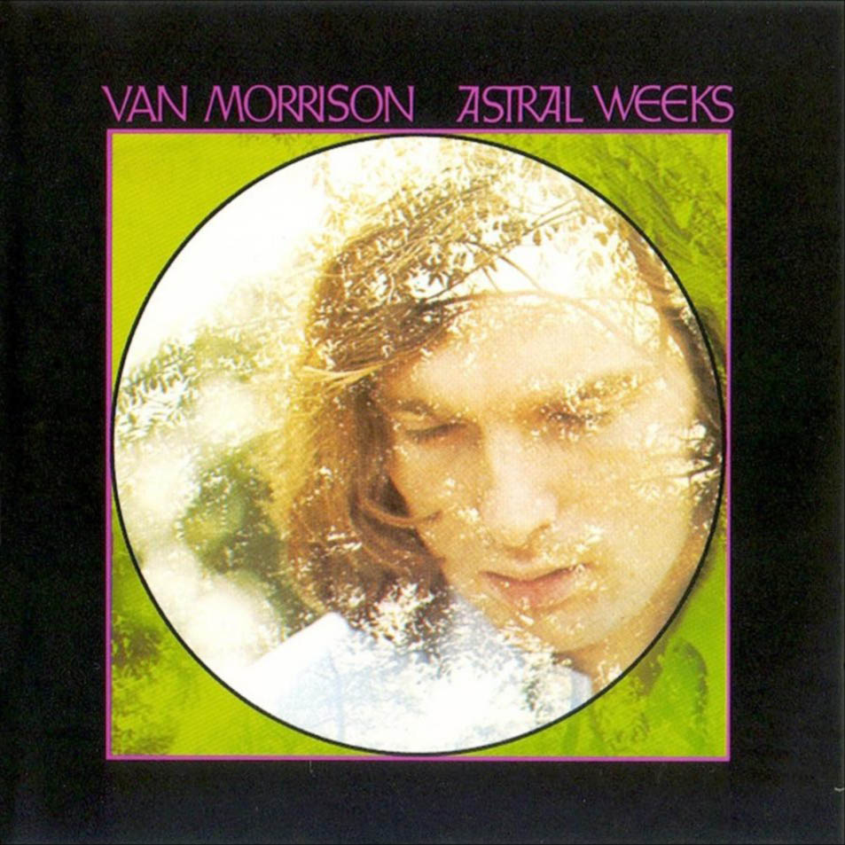

Astral Weeks —en español: Semanas astrales— es el segundo álbum de estudio del músico norirlandés Van Morrison, publicado por la compañía discográfica Warner Bros. Records en noviembre de 1968. Fue grabado en los Century Sound Studios de Nueva York durante tres sesiones entre septiembre y noviembre de 1968. Salvo por John Payne, Morrison y los músicos de jazz contratados para la grabación nunca habían tocado anteriormente juntos, y las sesiones comenzaron sin ensayos ni el estudio de partituras.
